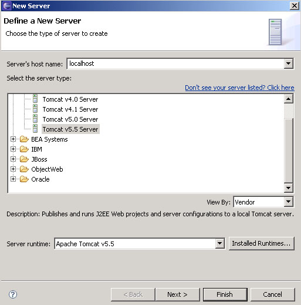
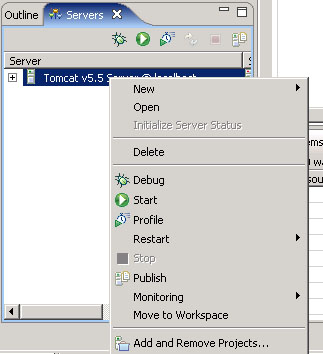
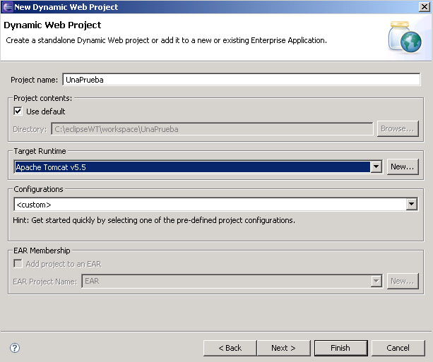
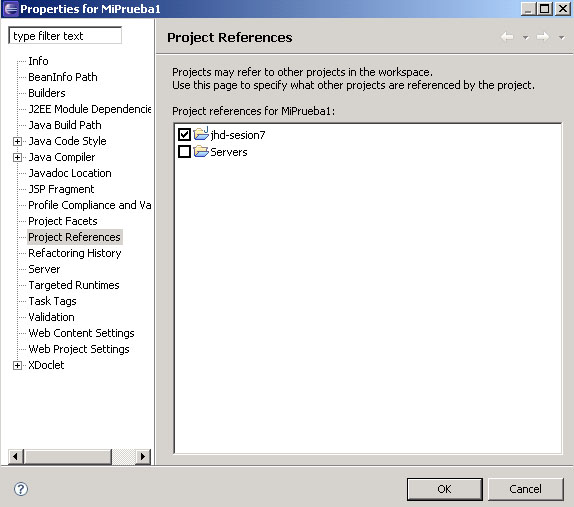

Herramientas para aplicaciones web
Desarrollo y despliegue con WebTools
WebTools es un plugin ya integrado con Eclipse, que permite gestionar aplicaciones web como proyectos, teniéndolo todo integrado y a mano para poder empaquetar, probar y desplegar la aplicación de forma cómoda. Para ello, desde WebTools podremos, entre otras cosas:
- Gestionar el servidor web sobre el que queremos desplegar y/o probar la aplicación, pudiendo editar su configuración, y pararlo y reanudarlo cuando lo necesitemos, desde el propio Eclipse
- Crear y desarrollar las aplicaciones web que vayamos a desplegar. Para cada una, Eclipse nos organizará los ficheros según la estructura que digamos (carpeta de fuentes Java, carpeta WEB-INF, librerías, etc)
- Desplegar y testear las aplicaciones sobre el servidor tantas veces como queramos, manteniendo siempre el control sobre su ejecución desde Eclipse
Para trabajar con este tipo de elementos, trabajaremos desde la perspectiva J2EE de Eclipse. Veremos cómo realizar estas tareas a continuación.
Gestión de servidores web con WebTools
Para dar de alta en Eclipse el servidor web sobre el que queremos trabajar, vamos a Window - Show View - Servers, para abrir la vista de Servidores, y después, pinchando sobre ella con el botón derecho, vamos a New - Server. Podemos llegar igualmente desde el menú Window - Preferences, yendo a la opción Server - Installed Runtimes, y luego pulsando Add para añadir el nuevo servidor. Después, en la ventana que aparece, simplemente rellenamos los datos del nombre del host (por defecto, localhost), y el tipo de servidor web que usamos.

Es posible, si no detecta la instalación, que en un paso posterior nos pida que indiquemos el directorio de instalación de dicho servidor.
Después, en la vista Servers ya tendremos añadido el nuevo servidor. Haciendo click con el botón derecho sobre él, accedemos a las opciones para pararlo, reanudarlo, asociarle aplicaciones, etc

Creación y desarrollo de una aplicación web con WebTools
Para crear un proyecto de aplicación web desde WebTools, vamos al menú File - New - Other - Web - Dynamic Web Project

En los siguientes pasos del asistente podemos elegir su configuración, y las carpetas donde alojar contenido web y fuentes Java. La estructura de carpetas que mantendremos en nuestros proyectos web será la siguiente:
- Carpeta src: carpeta de fuentes, con todas las clases Java y paquetes que hagamos para nuestra aplicación (clases auxiliares, servlets, etc)
- Carpeta resources: será una carpeta de fuentes, pero con todos los ficheros auxiliares (por ejemplo, ficheros .properties) que queramos tener disponibles en el CLASSPATH).
- Carpeta test: otra carpeta de fuentes, con las clases de prueba (JUnit) para las clases que tengamos en src. Los nombres de paquetes que tengamos aquí serán los mismos que los utilizados en src, y las clases de prueba se llamarán igual que las originales, pero acabadas en ...Test.
-
Carpeta WebContent: con la estructura de la aplicación web. En su carpeta raíz podremos colocar las páginas HTML / JSP (organizadas en subcarpetas si queremos)
- Subcarpeta WebContent/WEB-INF: con el fichero descriptor de la aplicación (web.xml)
- Subcarpeta WebContent/WEB-INF/lib: con las librerías JAR que necesite nuestra aplicación
- Subcarpeta WebContent/WEB-INF/classes: inicialmente vacía, en ella se copiarán después automáticamente los ficheros fuente de src
- Carpeta build: para dejar la aplicación web integrada y lista para desplegarse, con los ficheros fuente ya copiados en WEB-INF/classes, y todos los ficheros y directorios ya organizados.
- Carpeta dist: para guardar un fichero WAR con toda la aplicación de la carpeta build ya empaquetada y lista para distribuirse.
- Carpeta conf: para ficheros de configuración adicionales de la aplicación
- Carpeta db: con los scripts y elementos para la base de datos
- Carpeta doc: con ficheros de documentación
Algunas de estas carpetas las creará el propio asistente al terminar de crear el proyecto (como src, o WebContent y sus subcarpetas). Otras deberemos crearlas nosotros a mano. Una vez tengamos el proyecto creado, ya podemos irlo desarrollando.
Interdependencias entre proyectos
En ocasiones deberemos relacionar algún proyecto de clases Java que tengamos hecho, con un nuevo proyecto web que vayamos a hacer, para poder utilizar e incorporar las clases del proyecto Java en nuestro proyecto web. Para ello, vamos con el botón derecho del ratón sobre el proyecto, y vamos a sus Properties. En ellas, vamos a Project References, y marcamos con el ratón los proyectos que queramos asociar al actual:

Despliegue de aplicaciones web con WebTools
Una vez tengamos la aplicación web lista para probar en el servidor web, tenemos dos alternativas para desplegarla y probarla:
- Utilizar las facilidades de despliegue sobre el servidor que ofrece WebTools. Esta opción la utilizaremos en fase de desarrollo y depuración, para probar de forma cómoda y rápida los cambios que vayamos haciendo sobre nuestra aplicación.
- Utilizar un fichero build.xml de Ant con las tareas necesarias para compilar, empaquetar y desplegar. Este método se vio en la sesión 2 del módulo, y lo utilizaremos cuando tengamos la aplicación ya probada, y queramos hacer el empaquetamiento y despliegue definitivo.
Para poder desplegar la aplicación utilizando WebTools, simplemente tenemos que pinchar con el botón derecho sobre el proyecto web y elegir la opción Run As - Run on Server. Inicialmente, ya le hemos asignado el servidor al proyecto, cuando lo creamos, así que WebTools ya sabe sobre qué servidor desplegar los cambios.
Pooling de conexiones en Tomcat
Las aplicaciones web que acceden a una base de datos son muy frecuentes. Si la aplicación es para uso particular, o para un uso muy reducido y poco concurrente, podemos configurar un acceso por JDBC simple desde las diferentes páginas y clases que la componen.
Sin embargo, si a la aplicación va a poder acceder mucha gente concurrentemente, y lanzar consultas o modificaciones de la base de datos desde las páginas, es posible que el servidor falle ante la avalancha de peticiones, y no tenga conexiones preparadas a la base de datos para satisfacer todas las demandas.
Para ello, podemos introducir ciertos elementos de configuración en ficheros XML de nuestra aplicación, para preestablecer una batería de conexiones, de forma que Tomcat se encarga de gestionar las que están libres, asignarlas a nuevas peticiones, liberar las de las peticiones que ya no se usan, etc.
Para configurar este pool de conexiones en Tomcat, necesitamos crear/editar dos ficheros de configuración XML:
-
Primero, deberemos crear en una carpeta META-INF dentro de nuestra aplicación web, un fichero llamado context.xml, con el siguiente contenido:
<?xml version="1.0" encoding="ISO-8859-1"?> <Context> <Resource name="miBD" type="javax.sql.DataSource" auth="Container" username="root" password="root" driverClassName="com.mysql.jdbc.Driver" url="jdbc:mysql://localhost:3306/bdprueba?autoReconnect=true"/> <ResourceParams name="miBD"> <parameter> <name>maxActive</name> <value>20</value> </parameter> <parameter> <name>maxIdle</name> <value>5</value> </parameter> <parameter> <name>maxWait</name> <value>10000</value> </parameter> </ResourceParams> </Context>Se ha establecido así un pool de conexiones a una base de datos MySQL. Partiendo de esta premisa, los elementos en negrita son modificables:
- name: El atributo name de la etiqueta Resource indica el nombre que le queremos dar al pool de conexiones. Es arbitrario, y totalmente a nuestra elección
- username y password: Estos atributos de Resource indican el usuario y password para acceso a la base de datos MySQL
- url: El atributo url de la etiqueta Resource especifica la URL de conexión a la base de datos. En general, la URL será casi igual que la del ejemplo, cambiando únicamente el nombre de la base de datos (bdprueba) por el que nos interese
-
Hay una serie de parámetros adicionales de configuración (ResourceParams) para especificar características del pooling:
- maxActive: máximo número de conexiones a la BD que se mantendrán activas
- maxIdle: máximo número de conexiones libres que habrá en el pool (poner 0 para no tener límite). Este parámetro permitirá limitar el máximo de conexiones activas en cada momento. Por ejemplo, si maxActive está puesto a 100, pero sólo tenemos 20 conexiones activas, y permitimos 5 desocupadas, en total habrá 25 conexiones en el pool en ese momento (luego se crearán más si son necesarias)
- maxWait: tiempo en milisegundos que se deberá esperar como máximo para recibir una conexión libre (10 segundos, en el ejemplo)
Notar que el atributo name del ResourceParams debe coincidir con el name que le asignamos al Resource, pues es una referencia a él.
También es posible poner todos los atributos juntos dentro del Resource:
<?xml version="1.0" encoding="ISO-8859-1"?> <Context> <Resource name="miBD" type="javax.sql.DataSource" auth="Container" username="root" password="root" driverClassName="com.mysql.jdbc.Driver" url="jdbc:mysql://localhost:3306/bdprueba?autoReconnect=true" maxActive="20" maxIdle="5" maxWait="10000"/> </Context> -
En segundo lugar, deberemos añadir un bloque a nuestro descriptor de despliegue (WEB-INF/web.xml), que utilice el recurso que hemos creado en el fichero anterior:
<?xml version="1.0" encoding="ISO-8859-1"?> <web-app ....> ... <resource-ref> <res-ref-name>miBD</res-ref-name> <res-type>javax.sql.DataSource</res-type> <res-auth>Container</res-auth> </resource-ref> ... </web-app>
Una vez hecho esto, ya podremos utilizar las conexiones de este pool en nuestra aplicación web, accediendo por JNDI al nombre que le hemos dado al pool de conexiones (miBD, en el ejemplo). Veremos ejemplos de esto más adelante.
Introducción a las pruebas de aplicaciones web con Cactus
Cactus es una librería de testeo de Jakarta muy útil para probar el funcionamiento de código en el lado del servidor, utilizando para ello JUnit. Pensemos que es difícil probar el funcionamiento de una aplicación que simplemente sirve datos a un cliente (o navegador), ya que para poder hacer las pruebas necesitaríamos regenerar una petición-respuesta HTTP, y ver cómo interactúan con ella los métodos del servidor que queramos probar.
Podemos encontrar más información sobre Cactus en: http://jakarta.apache.org/cactus
Cactus implementa una estrategia dentro del contenedor, es decir, las pruebas que se diseñen con Cactus se ejecutan dentro del contenedor web en que esté desplegada la aplicación web en prueba.
En cuanto a su composición, Cactus se divide en 3 grandes elementos:
- La estructura (framework) de Cactus: el núcleo de Cactus, que proporciona la API para implementar las pruebas
- Los módulos de integración: aplicaciones y frameworks que facilitan el uso de la estructura principal (por ejemplo, scripts de Ant, plugin para Eclipse, etc)
- Ejemplos: proyectos simples que demuestran cómo escribir las pruebas de Cactus y cómo usar los módulos de integración.
Instalación de Cactus
Como trabajaremos desde Eclipse, necesitamos tener Cactus integrado en él. Aparte de eso, sólo necesitamos tener instalada una máquina virtual Java (1.2 o superior), y un servidor web para aplicaciones J2EE (que cumpla la especificación 2.2 de servlets, o superior).
Para instalar Cactus, la instalación se compone de 2 bloques: uno para la parte cliente (donde se forman las peticiones y se envían al servidor), y otra para el servidor (donde se ejecutan las pruebas, realmente)
Para la parte del servidor, los pasos a seguir son:
- Colocar las librerías de Cactus en el classpath (en una aplicación web, las colocamos en la carpeta WEB-INF/lib de la aplicación).
- Colocar tanto las pruebas como las clases a probar también en el classpath del servidor (normalmente irán dentro de la subcarpeta WEB-INF/classes de la aplicación web, en sus correspondientes paquetes).
-
Mapear las URLs de los redirectores de Cactus, dentro del fichero web.xml. Un ejemplo de mapeo podría ser el siguiente:
... <filter> <filter-name>FilterRedirector</filter-name> <filter-class>org.apache.cactus.server.FilterTestRedirector</filter-class> </filter> <filter-mapping> <filter-name>FilterRedirector</filter-name> <url-pattern>/FilterRedirector</url-pattern> </filter-mapping> <servlet> <servlet-name>ServletRedirector</servlet-name> <servlet-class>org.apache.cactus.server.ServletTestRedirector</servlet-class> </servlet> <servlet> <servlet-name>JspRedirector</servlet-name> <jsp-file>/jspRedirector.jsp</jsp-file> </servlet> <servlet-mapping> <servlet-name>ServletRedirector</servlet-name> <url-pattern>/ServletRedirector</url-pattern> </servlet-mapping> <servlet-mapping> <servlet-name>JspRedirector</servlet-name> <url-pattern>/JspRedirector</url-pattern> </servlet-mapping>
Estas líneas hacen que se redirijan las peticiones de prueba de filtros, servlets y páginas JSP, respectivamente, al módulo de Cactus adecuado para probarlas.
Para la parte cliente, deberemos:
- Asegurarnos que las librerías de Cactus estén en el classpath (lo deberemos haber hecho así ya para el servidor)
-
Colocar también en el classpath un fichero llamado cactus.properties, que indique la URL del contexto de la aplicación web donde residen las pruebas (y los nombres de los redirectores, si son diferentes a los definidos en el fichero web.xml). Un ejemplo de fichero sería:
cactus.contextURL=http://localhost:8080/BibliotecaWeb
Este fichero podemos colocarlo dentro de nuestra carpeta WEB-INF/classes. Para ello, lo colocaremos dentro de la carpeta de fuentes resources, de nuestro directorio de desarrollo visto antes, para que después se vuelque automáticamente a WEB-INF/classes.
Cactus y Ant
Cactus ofrece una tarea Ant que realiza los siguientes pasos:
- Despliega el WAR/EAR, que ya esta configurado para ejecutar las pruebas Cactus, en el contenedor de destino.
- Si el contenedor no esta arrancado, lo arranca. Sino, lo deja ejecutando.
- Ejecuta las pruebas Cactus
- Si el contenedor lo arranco esta tarea entonces lo para. Si ya estaba arrancado, lo deja funcionado.
Por lo tanto, en la tarea vamos a definir:
- donde se encuentra el archivo WAR/EAR
- cual y donde esta el contenedor a utilizar
- cuales son las pruebas (o suites) a ejecutar
Un ejemplo de fichero build.xml con estas tareas sería:
...
<!-- Definimos la tarea de Cactus -->
<taskdef resource="cactus.tasks">
<classpath refid="project.classpath" />
</taskdef>
<target name="test" depends="dist">
<cactus warfile="${dist.home}/${app.name}.war"
fork="yes" printsummary="yes" showoutput="yes">
<classpath refid="project.classpath" />
<containerset timeout="180000">
<tomcat5x
dir="${tomcat.home}"
serverxml="conf/server.xml"
port="8080" />
</containerset>
<formatter type="plain" />
<test name="es.ua.jtech.j2ee.dp.AllSuite" />
<!-- Otro modo de definir que pruebas queremos ejecutar
<batchtest>
<fileset dir=".">
<include name="**/Test.java" />
<include name="**/Suite.java" />
<exclude name="**/Test*All.java" />
</fileset>
</batchtest>
-->
</cactus>
</target>
...
Introducción al logging en aplicaciones web
Las librerías de logging vistas en módulos anteriores, como Log4J o commons-logging, pueden utilizarse de forma casi idéntica en aplicaciones web J2EE. Para ello, tenemos que:
- Añadir los ficheros JAR de las librerías (commons-logging-X.X.jar y log4j-X.X.X.jar) en la carpeta WEB-INF/lib de nuestra aplicación
-
Colocar en la carpeta WEB-INF/classes de nuestra aplicación un fichero commons-logging.properties indicando que vamos a utilizar Log4J como librería subyacente:
org.apache.commons.logging.Log=org.apache.commons.logging.impl.Log4JLogger
-
Colocar también en WEB-INF/classes un fichero log4j.properties con la configuración de logging para Log4J. Por ejemplo:
# Coloca el nivel root del logger en DEBUG (muestra mensajes de DEBUG hacia arriba) # Añade appender A1 log4j.rootLogger=DEBUG, A1 # A1 se redirige a la consola log4j.appender.A1=org.apache.log4j.ConsoleAppender log4j.appender.A1.Threshold=INFO # A1 utiliza PatternLayout log4j.appender.A1.layout=org.apache.log4j.PatternLayout log4j.appender.A1.layout.ConversionPattern=%d{dd/MM/yyyy HH:mm:ss} - %p - %m %n - Finalmente, sólo queda en cada servlet o clase Java colocar los mensajes de log donde queramos. Veremos cómo hacerlo en servlets y páginas JSP en el siguiente módulo
Realmente, en nuestro directorio de desarrollo, no pondremos los ficheros .properties en WEB-INF/classes, sino que crearemos una carpeta fuente llamada resources, como se ha explicado en la estructura de directorios anterior, y dejaremos allí los ficheros. Después, desde WebTools o desde Ant, nos encargaremos de copiar estos ficheros en build/WEB-INF/classes.